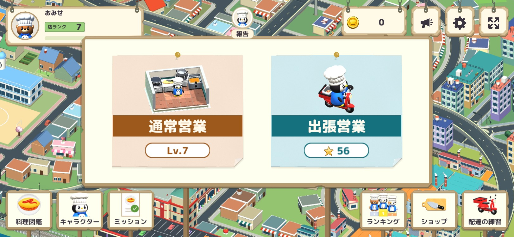

最終更新：2026年11月28日 02:35
このページは、その都度更新していきます。ときどき見に来てください。
最初に（大事なお願い）
- 公開までは、画面や中身を SNS に載せないでください。
- 招待リンクは、ほかの人に渡さないでください。友だちと協力プレイで遊びたい時は、βテスター募集ページを案内してください。
- テストのデータ（進み具合・コイン・料理人・ランキング）は、公開前にすべて消えます。
はじめに
- 公開前の「クックライド」を、先に遊んでもらうテストです。
- 期間：β の審査が通った日から、公開の前まで（公開は1月ごろの予定です）
- 料理を作って、バイクで街へ届けるゲームです。1人でも、2〜4人の協力でも遊べます。
入れ方（3分ほど）
- App Store で「TestFlight」を入れます。
- βテストに申し込むと表示される招待リンクを開きます。
- 「クックライド」をインストールします。
遊べるのは iPhone と iPad です。TestFlight から更新の知らせが来たら、更新をお願いします。
アプリを開いた時に「新しい版が出ています」と出たら、TestFlight のアプリを開き、「クックライド」の「アップデート」を押してください。札には「App Store で更新」と書いてありますが、βテストの間は TestFlight からの更新になります。更新しても、進み具合やコインはそのまま残ります。
遊んでほしいこと
- 最初の10分：このページを読み終えたら、ほかの情報は見ずに、まずは一度遊んでみてください。何も知らない状態で、どこに迷うかを知りたいです。
- その後：好きなだけ遊んでください。
- 協力プレイ：友だちどうしで、好きな時に遊んでください。
特に知りたいこと
このゲームは、ゲームに慣れていない人でも、画面の操作で迷わずに遊べることを目指しています。そのため、ほんの少しでも「分かりにくい」と感じた所を、いちばん知りたいです。迷った所は、そのまま直す場所になります。
- どこを押せばいいか、迷った
- 何をすればいいか、すぐに分からなかった
- 文字やボタンが小さい・読みにくい
- 思っていた動きと違った
- 説明を読まないと分からなかった
「たぶん自分が慣れていないだけ」と思うことも、送ってもらえるととても助かります。
「報告」ボタンの使い方
不具合はもちろん、要望や良かったところも送ってください。届いた数だけ、直す所や伸ばす所が見えてきます。届いた報告は AI でまとめて読み込むので、どれだけたくさん送ってもらっても大丈夫です。一言だけでも、思いついた時に気軽に押してもらえるとうれしいです。
明らかな不具合だと思っても、こちらがまだ気づいていないことがあります。「もう知っているかも」と思っても、全部送ってください。同じ報告がいくつ届いても大丈夫です。
おかしいと思ったら、その場ですぐ「報告」ボタンを押してください。押した時の画面がそのまま付くので、何が起きたかがいちばんよく伝わります。後でまとめて送るより、その場で押してもらえる方が助かります。
送る時は、ゲームの中の「報告」ボタンを使います。画面の上の方にある、料理人の顔の丸いボタンです。
ボタンを押すと、「気づいたことを送る」という見出しの報告画面が開きます。



- ひとこと：何があったかを短く書けます。
- 不具合（動かない・つながらない・重い・カクつく）：押すとすぐ送られます。
- 感想（気になる・よかった・こうしてほしい）：「気になる」「こうしてほしい」は、「ひとこと」を書いてから押してください。
- 写し：その時の画面と端末の情報が、自動で付きます。
アプリが落ちた時に TestFlight の報告画面が出たら、そこからも送れます。
βテストのお礼：「広告なし」をプレゼントします
公開までの間に、「報告」ボタンから次の物を合わせて5件以上送ってくれた方に、公開後の「広告なし」（本来は有料）を無料でプレゼントします。
- まだ知られていない不具合（新しい物）
- 気になったところ・直してほしいところ・分かりにくかったところ
- 良かったところ・気に入ったところ
同じ内容の報告や、すでに知られている不具合は数に入りません。数え方の判断は運営に任せてください。
テストのデータは公開前に消えるため、公開後に新しく始めたプレイヤーID（英数字6文字）を運営に送ってもらう形で届けます。送り方は、公開の時にこのページでお知らせします。
報告の例
こんな感じで、思ったことをそのまま送ってもらえれば大丈夫です。
- 動かない：「料理を置いたら、キャラが動かなくなった」
- つながらない：「部屋に入ろうとしたら、ずっと読み込み中のまま」
- 重い・カクつく：「バイクで走っている時、画面がカクカクする」
- 気になる：「どこを押せば始まるのか、すぐに分からなかった」
- よかった：「料理を出した時の音が気持ちいい」
- こうしてほしい：「ステージの途中でやり直せるボタンがほしい」
直し中の物（報告しなくて大丈夫です）
- 料理の見た目（3D） 11/24〜
- 一部の画面が白っぽい 11/24〜
- iPad で並びが少しずれる所 11/24〜
- 一部の効果音 11/24〜
困った時
- つながらない・止まった：アプリを一度閉じて、開き直してください。直らない時は「つながらない」で報告をお願いします。報告ボタンも押せない時は、問い合わせ先までお知らせください。
- 広告：テスト用の広告が出ます。動画を見ても、お礼のコインは増えません。
- シーズン営業：1月から始まります。それまでは遊べません。
データについて
- テスト中の購入は練習用で、お金はかかりません。
- 不具合を直すため、遊んだ記録がこちらに届きます。遊んだ記録や報告は正式公開前に消します。登録メールアドレスはβテストの連絡と正式公開の案内に使い、正式公開の知らせを送った後に消します。登録したメールアドレスの取り扱いもご覧ください。
問い合わせ
LINE や DM で直接、または cookride@takutonkatsu.com へどうぞ。
さいごに
みなさんからの意見が多いほど、公開するゲームはもっと良いものになります。うまくいかなかった所も、楽しかった所も、気づいたことはぜひ教えてください。
テストへのご協力、本当にありがとうございます。
ビルドごとの変更は、以下から選べます。
ビルド18で直したこと（11月28日 配布）
ビルド18を配りました。TestFlight から更新をお願いします。ビルド17 までに直した物も入っています。投げる・取る・置くの操作が新しくなったので、ぜひ試してください。
新しくなった操作
- 投げる：正面にまっすぐ飛び、途中の台に引っかからず着地点の近くの空いた台に吸い付くようになりました（ソロも協力も同じ飛び方です。2-1 の川越しや隣の台への投げを試してみてください）。
- 長押しで狙う：投げるボタンを短く押すと今までどおりすぐ投げ、長押しすると着地点の目印が出て狙えます（設定「操作」に「長押し中はキャラを止める」を追加・初期はOFF。歩きながらと止まって狙う違いも試してみてください）。
- 取る・置く：画面に出る目印と実際に取る・置く場所が一致し、手ぶらの時は焦げそうな鍋やフライパンを優先して足元の物も向きに関係なく拾いやすくなりました（忙しい場面で狙いどおりに取れるか試してみてください）。
直したこと
- #36 ソロ営業が終わった時に通信が切れても得点をアプリ内に残し、通信が戻ったら「確認を再試行」から結果を送り直せるようにしました。
- #37 ミッション・設定・ショップ・料理図鑑・ランキングなど20の画面で、枠の外をタップして閉じられるようにしました（他人のプロフィールや実績で後ろの画面を押してしまう不具合も直しました）。
- #40 キャラクター画面で「メインにする」を押してもホームへ戻らず、そのまま画面に残って変更を確かめられるようにしました。
- #48 「部屋に入る」「名前を変更」と報告画面「気づいたことを送る」の×ボタンをなくし、左上の「戻る」で閉じられるようにしました。
- #49 全画面の地図の下に「2本の指で拡大・縮小／ダブルタップで拡大」の操作説明を入れました。
- #50 出張ランキングから他の人のプロフィールを開いた時、自分が持っていない色違いのキャラでも顔写真が正しく表示されるようにしました。
- #51 出張ランキングから他の人のプロフィールや実績を開いた時、背景の街やロビーの音楽が消えないようにしました。
- #52 実績画面で、まだ解放していない章の料理は「？？？」と鍵の表示で伏せるようにしました。
- #53 通常営業で今の店ランクより低いレベルを選んでいる時、「評判は増えません」と評判が増える条件のレベルを案内するようにしました。
- #58 協力プレイでベルトコンベアに物を載せた時にも、ソロと同じ振動が出るようにしました。
- #59・#60 ホーム画面左上のバッジを店ランク札のすぐ右隣に並べ、画面が開く途中から表示されるようにしました。
- #61 通常営業の「定番」と「日替わり」のメニューを、ほかの画面と同じ紙の札にそろえました。
- #63 協力プレイの途中で「ロビーに戻る」を選んだ時にホームへ落とされにくいよう、同じロビーが開くまで待ってから戻るようにしました（通信が切れた時の「ロビーへ」ボタンが押せない不具合も直しました）。
- #64 協力プレイの 3-2 などでワープを使った時に通信が切れて動けなくなる不具合を、アプリ側でも起きないように直しました。
- #65・#68 ホームの出張ボタンとプロフィールの職歴にある星を、ステージ選択と同じ星の絵にそろえました。
- #66 プロフィールの相棒の顔写真に、選んでいる色違いが正しく反映されるようにしました。
- #67 プロフィールの「得意料理」に、注文札と同じ料理の絵が出るようにしました。
- #69 プロフィールにプレイヤーIDが出ていなかった場合でも、IDとコピー用の札が表示されるようにしました。
- #70 プロフィールの職歴の通常営業に、ホームと同じレベル表示を出しました。
- #71 ミッション画面の右上に所持コインの札を常に出し、報酬を受け取ると数字が増えるようにしました。
- 店ランクが上がった直後に「営業準備へ」を押すと、読み込み画面が止まることがある不具合を直しました。
- プロフィールで自己PRを変えた時、全画面の読み込みをはさまずその場で保存されるようにしました。
- 設定「操作」の「スティックが指についてくる」の初期値をOFFにしました（ONにしたい方は設定から切り替えられます）。
- 協力プレイで6桁の部屋番号を貼り付けるとそのまま参加できるようにし、満員などで入れなかった時もホームに戻らず番号入力画面で理由を表示するようにしました。
- 配達で走った距離・ダッシュ回数・通信が切れた後に戻って最後まで遊んだ回数が実績に数えられるようにし、実績一覧から「火を消した」を外しました。
- 報告画面「気づいたことを送る」で写真が送れなくても書いた文章をアプリ内に残して先に届け、通信が戻った時に送り直せるようにしました。
- 協力プレイ中に一度ほかのアプリへ移ってから戻った時、操作が効かなくなる不具合を直しました。
サーバー側で直したこと（前の版でも効く）
11月27日夜にサーバー側へ反映済みのため、ビルド17以前のアプリでもそのまま効きます。
- #64 協力プレイの 3-2 などでワープを使った時に回線が切れて動けなくなる不具合を直しました。
- 協力プレイで二階のあるステージ（4-5・6-6）の端で具材が消えたり外へ落ちたりしないようにしました。
- 協力プレイで車や穴のあるステージ（5-3・6-1 など）で、床に物がいっぱいの時でも落ちた物を拾えるようにしました。
試してほしいこと
- 新しくなった「投げる」「長押しで狙う」「取る・置く」の使い心地（2-1 の川越しや 1-4 の台への投げ、設定「長押し中はキャラを止める」のON/OFF、ソロと協力の両方）。
- 協力プレイでのワープ（3-2 など）やベルトコンベアの振動、途中で「ロビーに戻る」を押した時の戻り方、一度ほかのアプリへ移ってから戻った時に操作できるか。
- 店ランクが上がった直後に「営業準備へ」を押した時、読み込みが止まらず進めるか（#72）。
- プロフィール・ホーム・ミッション画面の表示（星や得意料理の絵、ID、所持コイン札、バッジの位置）や、枠の外タップ・「戻る」での閉じやすさ。
- 気になったことや不具合があれば、これまでどおりゲーム内の「報告」ボタンから送ってください（通信が不安定な時でも文章が残って届きやすくなっています）。
ビルド17で直したこと（11月27日 17:40 配布）
ビルド17を配りました。TestFlight から更新をお願いします。ビルド16 で直した物も入っています。
協力プレイ
- 2-5 などで、ベルトコンベアの上の物が拾えないことがある不具合を直しました
ソロ・共通
- 設定の「操作」に「スティックが指についてくる」のオン・オフを足しました（オフにすると、押した所にスティックが止まったままになります）
- 操作の配置の画面で、ボタンどうしを重ねて置けないようにしました。前に重なったまま保存された配置も、開いた時に直します
ビルド16で直したこと
ビルド16 で直した物です（ビルド17 にも入っています）。
ソロ・共通
- 全画面の地図で、指での拡大・縮小と動かすのが効かなかった不具合を直しました（ダブルタップで拡大、最大の時は全体に戻ります）
- 配達代行が2件以上まとめて取りに来る時、先に終わった容器が棚の中で宙に浮いて見える所を直しました
- 最初の営業の後などに、ホームで報告ボタン以外が押せなくなる・固まることがある不具合を直しました
ビルド15で直したこと（11月27日 11:00 配布）
ビルド15を配りました。TestFlight から更新をお願いします（ビルド14 以下のままだと「新しい版が出ています」と出て遊べません）。配達代行の決まりが変わったので、ランキングは始め直しになりました。
協力プレイ
- ロビーで人が抜けて詰まった時、1P〜4P の番号と色を上から付け直すようにしました（厨房の料理人の色・「通信待ち」の札もそろえます。営業中は始めた時の番号のままです）
- 配達代行が届けるまでの時間を、今の40%ほどに短くしました（30秒→12秒）
ソロ・共通
- 配達代行が届けるまでの時間を、今の40%ほどに短くしました（出張 48秒→約19秒）。代行だけで遊んでも、点が取りやすくなりました
- ホームの街の全景に「地図」の札を付けました。配達先の住所（A-30 など）を全画面で見られます（指での拡大・縮小と動かすのは、まだ効かない不具合があり、次の版で直します）
ビルド14で直したこと（11月26日 配布）
ビルド14を配りました。TestFlight から更新をお願いします（ビルド13 のままだと「新しい版が出ています」と出て遊べません）。報告してもらった物を中心に直しました。
協力プレイ
- 配達の面で、残り時間が 0:00 になっても「営業終了」の札が出ずに固まることがある
- 移動台・回転台・ベルトコンベアなどの動く物が、操作のたびにカクつく
- ロビーの 1P〜4P と、厨房の料理人の色が合わない
- ミキサーからジャーを取ったのに、本体に残って見える
- 料理人どうしがすり抜ける（押し合うようになりました）
- アプリを裏に回して戻ると、操作が効かなくなる（その面が終わるまでは、裏に回っても戻れます）
- 部屋の番号を入れた後、キーボードの「完了」で入室できるようにしました
- 結果の画面で、ゲストもすぐ「ロビーへ戻る」を押せるようにしました（押さなくても、しばらくすると自動で戻ります）
- ロビーの登場料理を押すと、料理図鑑が開くようにしました
- ロビーで面の名前が切れる所を、番号と名前の2段にしました
- 全員がいなくなったロビーの部屋は、1〜2分で閉じるようにしました
- 配達に出ている人の「通信待ち」の札が時計に重なる所を、左上に移し、「1P 通信待ち」のように番号を付けました
- ロビーの「準備OK」が、人の出入りや戻った時に外れたり食い違ったりする
- 協力でも、ゲストが準備OKを押した時とホストが「はじめる」を押した時に、その面の説明看板が出るようにしました
- 色違いのキャラを選んだ仲間の顔が、ロビーで帽子の絵になることがある
ソロ・共通
- 通行人の見た目を、移動台のシェフと同じ白い服・白い帽子にしました（24キャラ全部が出ます）
- 通行人が料理人をすり抜ける（通行人が料理人を押しのけるようになりました）
- ソロの結果の画面で「次のステージ」を押しても、「次のステージを確認できませんでした」と出て進めないことがある
- 初回起動の時に、「本日の食材を仕入れています…」から動かず、「はじめる」が出ないことがある
- 容器台を長押しで運ぶと、載せた素材のアイコンがずれる
- ホームのバッジが、一度プロフィールを開かないと出ない
- 起動した時に、お知らせの赤い印が付かないことがある
- デイリーボーナスで、受け取った後に振動が出ない
- 設定の並びを「音量・表示 → 操作 → 遊び方 → その他」にしました
- 説明看板「2人を使い分ける」の切替ボタンを、厨房と同じ形にしました
- 通常営業で、店ランクが上がったら、そのレベルの定番の料理系統に自動で切り替わるようにしました
- ランキングで人を押すと、その人のプロフィール（店ランク・バッジ・実績）が見られるようにしました
- ホームの「プレゼントが届いています」の札の絵と、受け取った時の動きを新しくしました
- コインの数を、「コイン」の字ではなくコインの絵で出すようにしました
サーバー（もう直っています）
- 点数が★の線を超えているのに、★が付かないことがある（★の基準を新しくそろえました。ランキングは始め直しになりました）
- 営業の種類によって、実績が数えられていない物がある（協力の提供数・料理なども数えるようになりました）
- 配達の面で、残り時間が 0:00 の時にバイクで町に出ていると、「営業終了」の札が出ずに固まることがある（サーバーの側を直したので、ビルド13 でも起きにくくなりました）